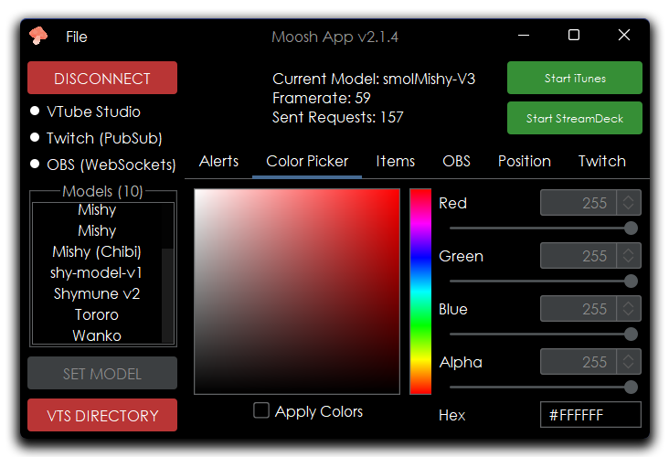
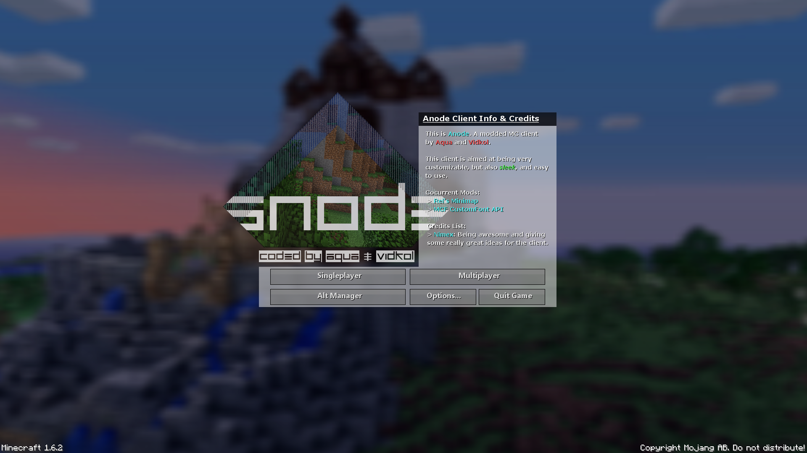
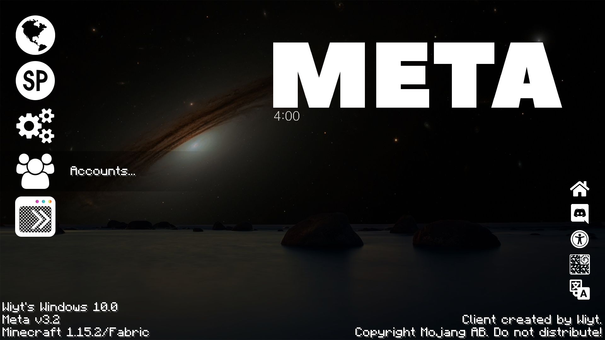

Visual layouts and designs
Projects¶
I have much experience with designing in a few different programming languages and creating full exernal applications and easy-to-use user interface menus.
Moosh App
I created this application called 'Moosh App' along with an old friend of mine as an applet to help with my virtual model during my streams. I sketched out the design and we worked hand-in-hand to create it using only Java.
This extremely useful application is utilized in my streams still to this day. It hooks into the VTube Studio, OBS Studio and Twitch PubSub (which I will soon be migrating to EventSub later this year) websockets and communicates with each other to accomplish certain tasks.
It can do a multitude of events like hide or move the position of a model based on if a certain OBS scene is viewed, update the color of a currently loaded model and apply certain effects using the VTube Studio API.
Meta (Minecraft Client)
The video above is of an old Minecraft client I created called Meta. It contains 80+ features as well as many different customizable options when it comes to the coloring and how you want your GUI to look.
 These images above are of a couple of the main menus I made for my clients. I used to go under the alias 'Aqua' during most of my years playing Minecraft.
I created these as custom projects for one of my, now defunct, Minecraft YouTube channels.
SMW⁺⁺: Delve Into Depravity
In 2018 I started production on a Super Mario World hack, code-named "SMW++", but since then I haven't had time to fix certain things about it and lost the time to work on it.
This hack features many ASM patches, custom sprites, ExGFX and more. The levels are more on the difficult side but anyone who can call themselves a veteran of SMW hacks probably won't feel a thing.
I never really intended on posting my hack to SMW Central, but I know I did want people to experience it even if it's on the shorter side. This hack is more of a proof-of-concept than anything else, but have fun with this one world (plus a little bit more) hack!
Story: Mario gets knocked out, and the Princess gets stolen away in the middle of the night.
You'll need Lunar IPS or Floating IPS to play the game, as the patch has to be applied to a clean SMW ROM file.